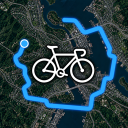

プライバシーポリシー
UltraSpeed(iPhone / Apple Watch)
SHIFTEX, LLC(以下「当社」)は、サイクルコンピューター App「UltraSpeed」(以下「本アプリ」)における利用者の情報の扱いを、次のとおり定めます。
1. 要点
- 本アプリが扱う情報は、利用者の端末(iPhone・Apple Watch)とヘルスケアの中にだけ保存されます。
- 当社のサーバーへ情報を送ることはありません。当社が利用者の情報を集めたり、見たりすることはできません。
- 広告や行動分析のための仕組み(SDK)は使っていません。
2. 本アプリが使う情報と目的
位置情報
走行中の速度・距離・ルートを測り、地図に現在地とルートを表示するために使います。走行中は画面を消しても記録を続けるため、バックグラウンドでも位置情報を使います。
気圧高度計(モーションとフィットネス)
勾配と獲得標高を計算するために使います。
ヘルスケア
走行をワークアウト・ルート・心拍数としてヘルスケアに保存し、走行中の心拍数や消費カロリーを表示するために読み取ります。ヘルスケアのデータを広告や販売に使うことはなく、iCloud を含む外部へ当社が送ることもありません。
3. 保存場所
- 走行記録(日時・距離・速度・標高・心拍数・ルート)は、本アプリの中(端末内)に保存します。
- ワークアウト・ルート・心拍数は、利用者が許可した場合にヘルスケアにも保存されます。
- Apple Watch で記録した走行は、Apple の WatchConnectivity を使ってペアリングされた iPhone へ直接送られます。当社のサーバーは通りません。
- 端末の iCloud バックアップを利用者がオンにしている場合、本アプリのデータは端末の他のデータと同様に Apple のバックアップに含まれます。その扱いは Apple のプライバシーポリシーに従います。
- 端末内のデータは、iOS・watchOS のデータ保護(パスコードによる暗号化)で守られます。
4. 外部のサービス
地図の表示には Apple の MapKit を使っています。地図を表示する際、表示中の場所の地図データを Apple から取得します。Apple による情報の扱いは Apple のプライバシーポリシー をご覧ください。
利用者が走行を GPX ファイルとして書き出し、ほかの App やサービスに共有した場合、その後の扱いは共有先のサービスの方針に従います。
5. 第三者への提供
当社は利用者の情報を保有していないため、第三者に提供することはありません。
6. お子さまの利用
本アプリはお子さまを含むどなたの情報も当社に送信しないため、年齢にかかわらず当社が個人情報を取得することはありません。
7. 情報の削除
- 個々の走行は、本アプリの履歴画面で左にスワイプして削除できます。
- 本アプリを削除すると、端末内の走行記録もすべて削除されます。
- ヘルスケアに保存されたデータは「ヘルスケア」App から削除できます。
- 位置情報やヘルスケアへのアクセスは、「設定」App からいつでも取り消せます。
8. 改定
本ポリシーを改定する場合は、このページでお知らせします。
9. お問い合わせ
本ポリシーについてのお問い合わせは、GitHub の Issues からお送りください。
制定日: 2026年11月3日